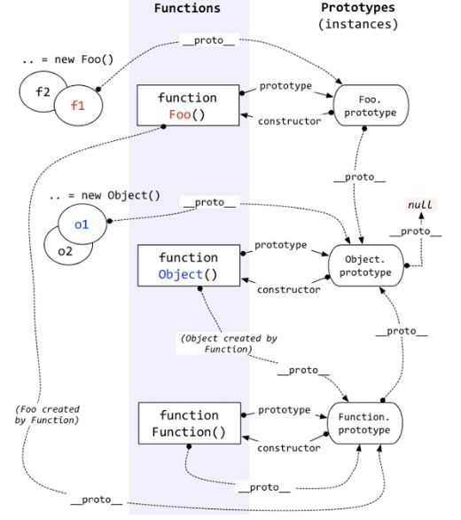
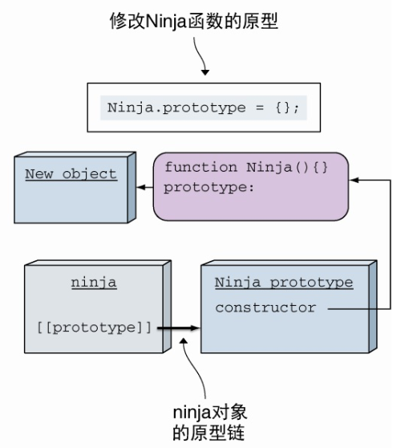

<!DOCTYPE HTML>
<html>
<head><meta name="generator" content="Hexo 3.8.0">
  <meta charset="utf-8">
  <meta http-equiv="X-UA-Compatible" content="IE=edge">
  <meta name="apple-mobile-web-app-capable" content="yes">
  <meta name="apple-mobile-web-app-status-bar-style" content="black">
  <meta name="google-site-verification" content>
  
  <title>JavaScript 要点记录</title>
  <meta name="author" content="strawberry">
  <meta name="description" content="Pain is temporary Pride is forever">
  
  
  <meta property="og:title" content="JavaScript 要点记录">
  <meta name="viewport" content="width=device-width, initial-scale=1, maximum-scale=1">
  <meta property="og:site_name" content="strawberryfields">
  <link href="/apple-touch-icon-precomposed.png" sizes="180x180" rel="apple-touch-icon-precomposed">
  <link rel="alternate" href="/atom.xml" title="strawberryfields" type="application/atom+xml">
  <link rel="stylesheet" href="/css/m.min.css">
  <link rel="icon" type="image/x-icon" href="/favicon.ico">
  <script type="text/javascript" src="https://cdnjs.cloudflare.com/ajax/libs/mathjax/2.7.5/MathJax.js?config=TeX-MML-AM_CHTML" async></script>
</head>
</html>
<body>
  <a id="top"></a>
  <div id="main">
    <div class="main-ctnr">
      <div class="behind">
  <a href="/" class="back black-color">
    <svg class="i-close" viewbox="0 0 32 32" width="22" height="22" fill="none" stroke="currentcolor" stroke-linecap="round" stroke-linejoin="round" stroke-width="3">
        <path d="M2 30 L30 2 M30 30 L2 2"/>
    </svg>
  </a>
  <div class="description">
    &nbsp;郁郁青青 长过千寻
  </div>
</div>


  <article class="standard post">
    <div class="title">
      
  
    <h1 class="page-title center">
        JavaScript 要点记录
    </h1>
  


    </div>
    <div class="meta center">
      <time datetime="2020-02-24T17:54:35.000Z" itemprop="datePublished">
  <svg class="i-calendar" viewbox="0 0 32 32" width="16" height="16" fill="none" stroke="currentcolor" stroke-linecap="round" stroke-linejoin="round" stroke-width="2">
    <path d="M2 6 L2 30 30 30 30 6 Z M2 15 L30 15 M7 3 L7 9 M13 3 L13 9 M19 3 L19 9 M25 3 L25 9"/>
  </svg>
  &nbsp;
  2020-02-25
</time>


    
    &nbsp;
    <svg class="i-tag" viewbox="0 0 32 32" width="16" height="16" fill="none" stroke="currentcolor" stroke-linecap="round" stroke-linejoin="round" stroke-width="2">
      <circle cx="24" cy="8" r="2"/>
      <path d="M2 18 L18 2 30 2 30 14 14 30 Z"/>
    </svg>
    &nbsp;
    <a href="/categories/笔记本/">笔记本</a>


    </div>
    <hr>
    
      <ol class="toc"><li class="toc-item toc-level-1"><a class="toc-link" href="#section"><span class="toc-text"></span></a><ol class="toc-child"><li class="toc-item toc-level-2"><a class="toc-link" href="#iloveregex"><span class="toc-text">iLoveRegex</span></a></li><li class="toc-item toc-level-2"><a class="toc-link" href="#闭包-closure-和作用域"><span class="toc-text">闭包 closure 和作用域</span></a><ol class="toc-child"><li class="toc-item toc-level-3"><a class="toc-link" href="#this"><span class="toc-text">this</span></a></li></ol></li><li class="toc-item toc-level-2"><a class="toc-link" href="#对象"><span class="toc-text">对象</span></a><ol class="toc-child"><li class="toc-item toc-level-3"><a class="toc-link" href="#模拟继承"><span class="toc-text">模拟继承</span></a></li><li class="toc-item toc-level-3"><a class="toc-link" href="#对象函数和构造器的关系图"><span class="toc-text">对象、函数和构造器的关系图</span></a></li></ol></li><li class="toc-item toc-level-2"><a class="toc-link" href="#symbol"><span class="toc-text">Symbol</span></a></li><li class="toc-item toc-level-2"><a class="toc-link" href="#proxy"><span class="toc-text">Proxy</span></a></li><li class="toc-item toc-level-2"><a class="toc-link" href="#reflect"><span class="toc-text">Reflect</span></a></li><li class="toc-item toc-level-2"><a class="toc-link" href="#generator"><span class="toc-text">Generator</span></a><ol class="toc-child"><li class="toc-item toc-level-3"><a class="toc-link" href="#thunk-函数"><span class="toc-text">Thunk 函数</span></a></li></ol></li><li class="toc-item toc-level-2"><a class="toc-link" href="#promise"><span class="toc-text">Promise</span></a></li><li class="toc-item toc-level-2"><a class="toc-link" href="#class"><span class="toc-text">Class</span></a></li><li class="toc-item toc-level-2"><a class="toc-link" href="#async"><span class="toc-text">async</span></a></li><li class="toc-item toc-level-2"><a class="toc-link" href="#集合"><span class="toc-text">集合</span></a></li><li class="toc-item toc-level-2"><a class="toc-link" href="#数组"><span class="toc-text">数组</span></a></li><li class="toc-item toc-level-2"><a class="toc-link" href="#map-数据结构"><span class="toc-text">Map 数据结构</span></a><ol class="toc-child"><li class="toc-item toc-level-3"><a class="toc-link" href="#实例属性和方法"><span class="toc-text">实例属性和方法</span></a></li></ol></li><li class="toc-item toc-level-2"><a class="toc-link" href="#set-数据结构"><span class="toc-text">Set 数据结构</span></a></li><li class="toc-item toc-level-2"><a class="toc-link" href="#操作符"><span class="toc-text">操作符</span></a></li><li class="toc-item toc-level-2"><a class="toc-link" href="#浏览器模型"><span class="toc-text">浏览器模型</span></a><ol class="toc-child"><li class="toc-item toc-level-3"><a class="toc-link" href="#web-worker"><span class="toc-text">Web Worker</span></a></li></ol></li><li class="toc-item toc-level-2"><a class="toc-link" href="#xmlhttprequest"><span class="toc-text">XMLHttpRequest</span></a></li><li class="toc-item toc-level-2"><a class="toc-link" href="#应用"><span class="toc-text">应用</span></a><ol class="toc-child"><li class="toc-item toc-level-3"><a class="toc-link" href="#深拷贝"><span class="toc-text">深拷贝</span></a></li><li class="toc-item toc-level-3"><a class="toc-link" href="#数组拍平"><span class="toc-text">数组拍平</span></a></li></ol></li><li class="toc-item toc-level-2"><a class="toc-link" href="#小特性"><span class="toc-text">小特性</span></a></li><li class="toc-item toc-level-2"><a class="toc-link" href="#性能"><span class="toc-text">性能</span></a><ol class="toc-child"><li class="toc-item toc-level-3"><a class="toc-link" href="#图片加载"><span class="toc-text">图片加载</span></a></li><li class="toc-item toc-level-3"><a class="toc-link" href="#缓存"><span class="toc-text">缓存</span></a></li></ol></li><li class="toc-item toc-level-2"><a class="toc-link" href="#事件"><span class="toc-text">事件</span></a><ol class="toc-child"><li class="toc-item toc-level-3"><a class="toc-link" href="#自定义事件"><span class="toc-text">自定义事件</span></a></li><li class="toc-item toc-level-3"><a class="toc-link" href="#滚轮事件"><span class="toc-text">滚轮事件</span></a></li></ol></li><li class="toc-item toc-level-2"><a class="toc-link" href="#安全"><span class="toc-text">安全</span></a></li><li class="toc-item toc-level-2"><a class="toc-link" href="#module"><span class="toc-text">Module</span></a><ol class="toc-child"><li class="toc-item toc-level-3"><a class="toc-link" href="#node.js-加载"><span class="toc-text">Node.js 加载</span></a></li><li class="toc-item toc-level-3"><a class="toc-link" href="#循环加载"><span class="toc-text">循环加载</span></a><ol class="toc-child"><li class="toc-item toc-level-4"><a class="toc-link" href="#es6-的循环加载"><span class="toc-text">ES6 的循环加载</span></a></li></ol></li></ol></li><li class="toc-item toc-level-2"><a class="toc-link" href="#html-元标签"><span class="toc-text">HTML 元标签</span></a></li><li class="toc-item toc-level-2"><a class="toc-link" href="#抓包"><span class="toc-text">抓包</span></a></li><li class="toc-item toc-level-2"><a class="toc-link" href="#sass"><span class="toc-text">Sass</span></a></li><li class="toc-item toc-level-2"><a class="toc-link" href="#eslint"><span class="toc-text">ESLint</span></a></li><li class="toc-item toc-level-2"><a class="toc-link" href="#学習サイト"><span class="toc-text">学習サイト</span></a></li><li class="toc-item toc-level-2"><a class="toc-link" href="#私はのコードスタイル"><span class="toc-text">私はのコードスタイル</span></a></li><li class="toc-item toc-level-2"><a class="toc-link" href="#ほしのかけら"><span class="toc-text">ほしのかけら</span></a></li><li class="toc-item toc-level-2"><a class="toc-link" href="#文ぶんの中の愚おろかな言葉ことば"><span class="toc-text">文ぶんの中の愚おろかな言葉ことば</span></a></li><li class="toc-item toc-level-2"><a class="toc-link" href="#ふしぎなアメ"><span class="toc-text">ふしぎなアメ</span></a></li></ol></li></ol>
    
    <div class="picture-container">
      
    </div>
    <h1 id="section"></h1>
<p>Brendan Eich</p>
<h2 id="iloveregex">iLoveRegex</h2>
<p>URL query 参数获取：</p>
<figure class="highlight plain"><table><tr><td class="gutter"><pre><span class="line">1</span><br><span class="line">2</span><br><span class="line">3</span><br><span class="line">4</span><br><span class="line">5</span><br><span class="line">6</span><br><span class="line">7</span><br><span class="line">8</span><br></pre></td><td class="code"><pre><span class="line">function query(name)</span><br><span class="line">&#123;</span><br><span class="line">	const search = location.search.substr(1)</span><br><span class="line">	const reg = new RegExp(`(^|&amp;)$&#123;name&#125;=([^&amp;]*)(&amp;|$)`, &apos;i&apos;)</span><br><span class="line">	const res = search.match(reg)</span><br><span class="line">	if (res === null) &#123; return null &#125;</span><br><span class="line">	return res[2]</span><br><span class="line">&#125;</span><br></pre></td></tr></table></figure>
<p>删除头尾空格：</p>
<figure class="highlight javascript"><table><tr><td class="gutter"><pre><span class="line">1</span><br><span class="line">2</span><br><span class="line">3</span><br></pre></td><td class="code"><pre><span class="line"><span class="function"><span class="keyword">function</span> <span class="title">zTrim</span>(<span class="params">z</span>) </span>&#123;</span><br><span class="line">  <span class="keyword">return</span> z.replace(<span class="regexp">/^\s+|\s+$/gm</span>, <span class="string">''</span>); <span class="comment">// 多行全局匹配</span></span><br><span class="line">&#125; <span class="comment">// 。</span></span><br></pre></td></tr></table></figure>
<p>补全非自闭合标签：</p>
<figure class="highlight javascript"><table><tr><td class="gutter"><pre><span class="line">1</span><br><span class="line">2</span><br><span class="line">3</span><br><span class="line">4</span><br><span class="line">5</span><br><span class="line">6</span><br></pre></td><td class="code"><pre><span class="line"><span class="keyword">const</span> tags = <span class="regexp">/^(area|base|br|col|embed|hr|img|input|keygen|link|menuitem|meta|param|source|track|wbr)$/i</span>; <span class="comment">// 这些是自闭合标签</span></span><br><span class="line"><span class="function"><span class="keyword">function</span> <span class="title">convert</span>(<span class="params">html</span>) </span>&#123;</span><br><span class="line">  <span class="keyword">return</span> html.replace(<span class="regexp">/(&lt;(\w+)[^&gt;]*?)\/&gt;/g</span>, (all, front, tag) =&gt; &#123;</span><br><span class="line">    <span class="keyword">return</span> tags.test(tag) ? all : front + <span class="string">"&gt;&lt;/"</span> + tag + <span class="string">"&gt;"</span>;</span><br><span class="line">  &#125;);</span><br><span class="line">&#125; <span class="comment">// 。</span></span><br></pre></td></tr></table></figure>
<p>中线转驼峰：</p>
<figure class="highlight javascript"><table><tr><td class="gutter"><pre><span class="line">1</span><br><span class="line">2</span><br><span class="line">3</span><br><span class="line">4</span><br><span class="line">5</span><br><span class="line">6</span><br><span class="line">7</span><br><span class="line">8</span><br><span class="line">9</span><br></pre></td><td class="code"><pre><span class="line"><span class="function"><span class="keyword">function</span> <span class="title">style</span>(<span class="params">element, name, value</span>) </span>&#123;</span><br><span class="line">  name = name.replace(<span class="regexp">/-([a-z])/ig</span>, (all, letter) =&gt; &#123;</span><br><span class="line">    <span class="keyword">return</span> letter.toUpperCase();</span><br><span class="line">  &#125;);</span><br><span class="line">  <span class="keyword">if</span> (<span class="keyword">typeof</span> value !== <span class="string">'undefined'</span>) &#123;</span><br><span class="line">    element.style[name] = value;</span><br><span class="line">  &#125;</span><br><span class="line">  <span class="keyword">return</span> element.style[name];</span><br><span class="line">&#125; <span class="comment">// 。</span></span><br></pre></td></tr></table></figure>
<h2 id="闭包-closure-和作用域">闭包 closure 和作用域</h2>
<p><span id="r闭包参数"></span> <span id="r闭包返回值"></span> 函数作为<a href="#闭包参数">入参</a>或<a href="#闭包返回值">返回值</a>都<strong>有可能</strong>形成闭包，这是因为函数总是把<code>所有上级作用域</code>中使用到的<code>变量</code>包裹进来，形成闭包。</p>
<p>闭包很常见，例如可以这样检测是否形成了闭包：对某元素数组分别进行 for 和 forEach <strong>遍历</strong>，遍历块对遍历元素<strong>添加点击事件</strong>，并<strong>设置回调函数</strong>打印当前 index，结果 for 遍历未形成闭包，因此总是打印循环里的最后一个 index 值，可以使用 bind 或在第二参数处填写裸 IIFE 返回一个回调函数自行形成闭包（IIFE 内需定义变量存储 index，在返回的回调函数中打印该变量），解决该问题。</p>
<p>在日常开发中，在不至于面向对象编程的情况下，就使用<strong>返回函数</strong>创建闭包的方法，这样每返回的一个函数就是一个全新作用域，来代表一个全新状态，好处是避免了重复逻辑代码。下面是一个能直接运行的例子：</p>
<figure class="highlight plain"><table><tr><td class="gutter"><pre><span class="line">1</span><br><span class="line">2</span><br><span class="line">3</span><br><span class="line">4</span><br><span class="line">5</span><br><span class="line">6</span><br><span class="line">7</span><br><span class="line">8</span><br><span class="line">9</span><br><span class="line">10</span><br><span class="line">11</span><br><span class="line">12</span><br><span class="line">13</span><br><span class="line">14</span><br><span class="line">15</span><br></pre></td><td class="code"><pre><span class="line">function returnF() &#123;</span><br><span class="line">	var b = 0;</span><br><span class="line">	return function() &#123;</span><br><span class="line">		++ b;</span><br><span class="line">		console.log(b);</span><br><span class="line">	&#125;</span><br><span class="line">&#125;</span><br><span class="line">// 这里创建了 3 个不同的变量 b</span><br><span class="line">let c = returnF(); let d = returnF(); let e = returnF();</span><br><span class="line"></span><br><span class="line">console.log(&apos;=== closure ===&apos;);</span><br><span class="line"></span><br><span class="line">c(); c();</span><br><span class="line">d();</span><br><span class="line">e(); e(); e(); // 。</span><br></pre></td></tr></table></figure>
<h3 id="this">this</h3>
<p>this 很好理解，this 总是会出现在实例中，指向（代表）当前实例。</p>
<p>this 的注意点：调用全局方法时，指向 window；箭头函数没有自己的 this（无法通过 apply, call, bind 方法指定 this），但是会继承上层作用域的 this。</p>
<p>模拟 bind：</p>
<figure class="highlight javascript"><table><tr><td class="gutter"><pre><span class="line">1</span><br><span class="line">2</span><br><span class="line">3</span><br><span class="line">4</span><br><span class="line">5</span><br><span class="line">6</span><br><span class="line">7</span><br><span class="line">8</span><br></pre></td><td class="code"><pre><span class="line"><span class="built_in">Function</span>.prototype.bind1 = <span class="function"><span class="keyword">function</span>(<span class="params"></span>) </span>&#123;</span><br><span class="line">	<span class="keyword">const</span> args = <span class="built_in">Array</span>.prototype.slice.call(<span class="built_in">arguments</span>);</span><br><span class="line">  <span class="keyword">const</span> t = args.shift();</span><br><span class="line">  <span class="keyword">const</span> self = <span class="keyword">this</span>;</span><br><span class="line">  <span class="keyword">return</span> <span class="function"><span class="keyword">function</span>(<span class="params"></span>) </span>&#123;</span><br><span class="line">    <span class="keyword">return</span> self.apply(t, args);</span><br><span class="line">  &#125;</span><br><span class="line">&#125; <span class="comment">// 。</span></span><br></pre></td></tr></table></figure>
<p>模拟 call：</p>
<ul>
<li>apply 以数组或集合的方式传入；</li>
<li>call 以多参数传入；</li>
</ul>
<figure class="highlight javascript"><table><tr><td class="gutter"><pre><span class="line">1</span><br><span class="line">2</span><br><span class="line">3</span><br><span class="line">4</span><br><span class="line">5</span><br><span class="line">6</span><br><span class="line">7</span><br><span class="line">8</span><br><span class="line">9</span><br><span class="line">10</span><br><span class="line">11</span><br><span class="line">12</span><br><span class="line">13</span><br><span class="line">14</span><br></pre></td><td class="code"><pre><span class="line"><span class="built_in">Function</span>.prototype.call1 = <span class="function"><span class="keyword">function</span>(<span class="params">t</span>) </span>&#123;</span><br><span class="line">  <span class="keyword">const</span> args, res;</span><br><span class="line">  t = t || <span class="built_in">window</span>;</span><br><span class="line">  t.fn = <span class="keyword">this</span>;</span><br><span class="line">  res = <span class="built_in">arguments</span>.length;</span><br><span class="line">  <span class="keyword">if</span> (res &gt; <span class="number">1</span>) &#123;</span><br><span class="line">	  args = <span class="built_in">Array</span>.prototype.slice.call(<span class="built_in">arguments</span>).slice(<span class="number">1</span>);</span><br><span class="line">		res = t.fn(...args);</span><br><span class="line">  &#125; <span class="keyword">else</span> &#123;</span><br><span class="line">    res = t.fn();</span><br><span class="line">  &#125;</span><br><span class="line">  <span class="keyword">delete</span> t.fn;</span><br><span class="line">  <span class="keyword">return</span> res;</span><br><span class="line">&#125; <span class="comment">// 。</span></span><br></pre></td></tr></table></figure>
<h2 id="对象">对象</h2>
<h3 id="模拟继承">模拟继承</h3>
<p>这样继承不会出现子类的构造器是父类的错误：</p>
<figure class="highlight javascript"><table><tr><td class="gutter"><pre><span class="line">1</span><br><span class="line">2</span><br><span class="line">3</span><br><span class="line">4</span><br><span class="line">5</span><br><span class="line">6</span><br><span class="line">7</span><br><span class="line">8</span><br><span class="line">9</span><br><span class="line">10</span><br><span class="line">11</span><br><span class="line">12</span><br><span class="line">13</span><br><span class="line">14</span><br></pre></td><td class="code"><pre><span class="line"><span class="function"><span class="keyword">function</span> <span class="title">Person</span>(<span class="params"></span>) </span>&#123;&#125;</span><br><span class="line">Person.prototype.dance = <span class="function"><span class="keyword">function</span>(<span class="params"></span>) </span>&#123;&#125;;</span><br><span class="line"></span><br><span class="line"><span class="function"><span class="keyword">function</span> <span class="title">Ninja</span>(<span class="params"></span>) </span>&#123;&#125;</span><br><span class="line">Ninja.prototype = <span class="keyword">new</span> Person();</span><br><span class="line"></span><br><span class="line"><span class="built_in">Object</span>.defineProperty(Ninja.prototype, <span class="string">"constructor"</span>, &#123;</span><br><span class="line">  enumberable: <span class="literal">false</span>,</span><br><span class="line">  value: Ninja,</span><br><span class="line">  writable: <span class="literal">true</span> <span class="comment">// 定义一个不可枚举的 constructor 属性 Ninja</span></span><br><span class="line">&#125;);</span><br><span class="line"></span><br><span class="line"><span class="keyword">var</span> ninja = <span class="keyword">new</span> Ninja();</span><br><span class="line"><span class="comment">// ninja.constructor === Ninja // true。</span></span><br></pre></td></tr></table></figure>
<blockquote>
<p>扎实前端系列：JavaScript实现继承 https://www.jianshu.com/p/af39457e7722</p>
<p>Javascript实现继承的6种方式 https://blog.csdn.net/Tokki_/article/details/91357384</p>
</blockquote>
<p>instanceof 的警告：构造函数原型的改变会导致 instanceof 返回否。</p>
<p><code>Object.create(null)</code>和<code>{}</code>：{} 创建的对象继承了 Object 自身，OCN 创建的对象则是干净的对象，可以使用<code>Object.create(Object.prototype)</code>达到和<code>{}</code>相同的效果。</p>
<p>关联博文：<a href="https://juejin.im/post/5acd8ced6fb9a028d444ee4e" target="_blank" rel="noopener">详解Object.create(null)</a>；<a href="https://developer.mozilla.org/zh-CN/docs/Web/JavaScript/Reference/Global_Objects/Object/create" target="_blank" rel="noopener">Object.create()</a>。</p>
<hr>
<p>Object.getOwnPropertyNames()： - 返回自身属性，包括不可枚举属性，不包括 Symbol 值作为名称的属性； - 该方法使用 Array.prototype.filter() 方法结合 Object.keys() 计算出所有不可枚举属性； - ES5 中该方法的入参不是原始对象类型会报异常。</p>
<hr>
<p>Object.prototype.hasOwnProperty()： - 检测一个对象是否有特定的自身属性；和 in 不同，该方法忽略从原型链上继承的属性； - 无视属性值为 null 或 undefined，只要有键即返回 true； - 直接使用原型上的该方法，Object.prototype.hasOwnProperty.call(foo, 'bar')，这样防止对象把继承的 hasOwnProperty 方法覆盖了，无法发挥正确作用。</p>
<hr>
<h3 id="对象函数和构造器的关系图">对象、函数和构造器的关系图</h3>
<p></p>
<h2 id="symbol">Symbol</h2>
<h2 id="proxy">Proxy</h2>
<p>紹介<small style="color: salmon">しょうかい</small>：代理，访问目标对象前拦截它，并对该访问进行过滤和改写，它在 API 使用者和对象间是<strong>中间人</strong>角色。生成 Proxy 实例的例子：<code>var proxy = new Proxy(target, handler);</code>，target 是目标对象，handler 是用于拦截的处理器（trap）对象。</p>
<p>借助代理并定义明确的规则来禁止访问 target 对象的某些属性，对外只暴露代理而不暴露 target 对象（target 应该对使用者完全隐藏）。</p>
<p>handler 对象的方法：<code>handler.getPrototypeOf()</code>，Object.getPrototypeOf 方法的捕捉器；<code>handler.setPrototypeOf()</code>，Object.setPrototypeOf 方法的捕捉器；<code>handler.isExtensible()</code>，Object.isExtensible 方法的捕捉器；<code>handler.preventExtensions()</code>，Object.preventExtensions 方法的捕捉器；<code>handler.getOwnPropertyDescriptor()</code>，Object.getOwnPropertyDescriptor 方法的捕捉器；<code>handler.defineProperty()</code>，Object.defineProperty 方法的捕捉器；<code>handler.has()</code>，in 操作符的捕捉器；<code>handler.get()</code>，属性读取操作的捕捉器；<code>handler.set()</code>，属性设置操作的捕捉器；<code>handler.deleteProperty()</code>，delete 操作符的捕捉器；<code>handler.ownKeys()</code>，Object.getOwnPropertyNames 方法和 Object.getOwnPropertySymbols 方法的捕捉器；<code>handler.apply()</code>，函数调用操作的捕捉器；<code>handler.construct()</code>，new 操作符的捕捉器。メソッドの紹介：https://es6.ruanyifeng.com/#docs/proxy#get；https://developer.mozilla.org/zh-CN/docs/Web/JavaScript/Reference/Global_Objects/Proxy。</p>
<p>Proxy 的　静的<small style="color: salmon">せいてき</small>メサット：Proxy.revocable()，示例：<code>let {proxy, revoke} = Proxy.revocable(target, handler);</code>，执行返回的 revoke 函数后就不能使用 proxy 实例了。</p>
<p>Proxy 实例的 this：Proxy 代理的目标对象 this 指向生成的实例，因此会无法直接访问一些属性或方法。</p>
<p>get：如需要“禁止访问下划线开头的属性”的时候使用，访问的时候抛错让使用者知道这些属性不可通过代理访问。</p>
<p>set：如需要“禁止设置下划线开头的属性”的时候使用；如需要“模式验证”的时候使用，例如让 age 属性只能是数字和大于零；如需要“限制通过代理设置属性的次数”的时候使用，结合 revocable。</p>
<p>使用处理器方法实现<strong>链式操作</strong>（get）、<strong>限制属性值大于 0</strong>（set）等例子：https://es6.ruanyifeng.com/#docs/proxy#get</p>
<p><a href="#实现限制%20age%20的值大于%200">实现限制 age 的值大于 0</a></p>
<h2 id="reflect">Reflect</h2>
<p>Reflect の設計<small style="color: salmon;">せっけい</small>目的：存储语言内部方法；返回合理结果（catch 和 bool）；使操作变为函数行为而非命令式；配合 Proxy。</p>
<p>Reflect 的方法和 Proxy 的所有拦截方法对应。</p>
<p><strong>has</strong> 和 <strong>deleteProperty</strong> 的用法：</p>
<figure class="highlight plain"><table><tr><td class="gutter"><pre><span class="line">1</span><br><span class="line">2</span><br><span class="line">3</span><br></pre></td><td class="code"><pre><span class="line">var obj = &#123; foo: 1 &#125;</span><br><span class="line">Reflect.has(obj, &apos;foo&apos;) // true // 代替 in 演算子　えんざんし</span><br><span class="line">Reflect.deleteProperty(obj, &apos;foo&apos;) // true // 代替 delete 演算子</span><br></pre></td></tr></table></figure>
<p>apply 方法：https://es6.ruanyifeng.com/#docs/reflect#Reflect-applyfunc-thisArg-args；https://developer.mozilla.org/zh-CN/docs/Web/JavaScript/Reference/Global_Objects/Reflect/apply。</p>
<h2 id="generator">Generator</h2>
<p>生成器函数参数发送值：正常参数。</p>
<p>next 发送值：值是上一次被挂起的 yield 表达式的最终结果。</p>
<p>生成器的<strong>双向通信</strong>：通过 yield 从生成器返回值（中间结果），通过迭代器 next() 把值传回生成器。</p>
<p>抛出异常：异常将抛回生成器。</p>
<h3 id="thunk-函数">Thunk 函数</h3>
<p>关于函数<strong>参数求值时机</strong>的问题，有“传值调用（call by value）”和“传名调用（call by name, cbn）”的意见，cbn 的实现往往把参数放到一个叫 <strong>Thunk 函数</strong>的临时函数中，用来替换<strong>表达式</strong>参数，而在 JavaScript 里则是用来替换入参<strong>多参数成为单参数</strong>。</p>
<p>简单的 Thunk 函数转换器：</p>
<figure class="highlight plain"><table><tr><td class="gutter"><pre><span class="line">1</span><br><span class="line">2</span><br><span class="line">3</span><br><span class="line">4</span><br><span class="line">5</span><br><span class="line">6</span><br><span class="line">7</span><br><span class="line">8</span><br><span class="line">9</span><br><span class="line">10</span><br><span class="line">11</span><br><span class="line">12</span><br><span class="line">13</span><br><span class="line">14</span><br><span class="line">15</span><br><span class="line">16</span><br><span class="line">17</span><br><span class="line">18</span><br><span class="line">19</span><br><span class="line">20</span><br><span class="line">21</span><br><span class="line">22</span><br><span class="line">23</span><br></pre></td><td class="code"><pre><span class="line">var Thunk = function(fn)</span><br><span class="line">&#123;</span><br><span class="line">	return function()</span><br><span class="line">	&#123;</span><br><span class="line">		var args = Array.prototype.slice.call(arguments);</span><br><span class="line">		return function(callback)</span><br><span class="line">		&#123;</span><br><span class="line">			args.push(callback);</span><br><span class="line">			return fn.apply(this, args);</span><br><span class="line">		&#125;;</span><br><span class="line">	&#125;;</span><br><span class="line">&#125;;</span><br><span class="line">// 上：ES5 下：ES6</span><br><span class="line">const Thunk = function(fn)</span><br><span class="line">&#123;</span><br><span class="line">	return function(...args)</span><br><span class="line">	&#123;</span><br><span class="line">		return function(callback)</span><br><span class="line">		&#123;</span><br><span class="line">			return fn.call(this, ...args, callback);</span><br><span class="line">		&#125;;</span><br><span class="line">	&#125;;</span><br><span class="line">&#125;; // 。</span><br></pre></td></tr></table></figure>
<blockquote>
<p>https://es6.ruanyifeng.com/?search=thunk&amp;x=0&amp;y=0#docs/generator-async#Thunk-%E5%87%BD%E6%95%B0</p>
</blockquote>
<h2 id="promise">Promise</h2>
<p>简单回调函数的 3 个问题：错误处理困难；相互依赖的“金字塔噩梦”；并行任务的棘手样板代码。</p>
<p>promise 对象的状态：pending 挂起，未实现；fulfilled 兑现承诺，实现；rejected 违背承诺，拒绝态。</p>
<p>promise 对象构造函数的参数：该参数是函数，执行成功进入 fulfilled，执行失败（隐式或显式）进入 rejected，否则 pending。</p>
<p>promise 的回调函数：成功和失败的回调可以同时在 then 方法中（错误函数在 then 的第二参数），也能<strong>链式调用</strong>分别在 then 和 catch 方法内。</p>
<p>如果不是处理互相依赖的任务，<strong>并行任务</strong>使用 Promise.all，<strong>竞赛任务</strong>使用 Promise.race，两个方法的参数都是 1 个 Promise 数组。</p>
<p>Promise 结合 Generator 完成互相依赖的异步任务：</p>
<figure class="highlight plain"><table><tr><td class="gutter"><pre><span class="line">1</span><br><span class="line">2</span><br><span class="line">3</span><br><span class="line">4</span><br><span class="line">5</span><br><span class="line">6</span><br><span class="line">7</span><br><span class="line">8</span><br><span class="line">9</span><br><span class="line">10</span><br><span class="line">11</span><br><span class="line">12</span><br><span class="line">13</span><br><span class="line">14</span><br><span class="line">15</span><br><span class="line">16</span><br><span class="line">17</span><br><span class="line">18</span><br><span class="line">19</span><br><span class="line">20</span><br><span class="line">21</span><br><span class="line">22</span><br><span class="line">23</span><br><span class="line">24</span><br><span class="line">25</span><br><span class="line">26</span><br><span class="line">27</span><br><span class="line">28</span><br><span class="line">29</span><br></pre></td><td class="code"><pre><span class="line">async(generator);</span><br><span class="line">function* generator()</span><br><span class="line">&#123;</span><br><span class="line">	try</span><br><span class="line">	&#123;</span><br><span class="line">		const ninjas = yield getJSON(&quot;data/ninjas.json&quot;);</span><br><span class="line">		const missions = yield getJSON(ninjas[0].missionsUrl);</span><br><span class="line">	&#125;</span><br><span class="line">	catch(e)</span><br><span class="line">	&#123;</span><br><span class="line">		console.log(&quot;we weren&apos;t able to get details&quot;);</span><br><span class="line">	&#125;</span><br><span class="line">&#125;</span><br><span class="line">function async(generator)</span><br><span class="line">&#123;</span><br><span class="line">	var iterator = generator();</span><br><span class="line">	function handle(iteratorResult)</span><br><span class="line">	&#123;</span><br><span class="line">		if (iteratorResult.done) &#123; return &#125;</span><br><span class="line">		const iteratorValue = iteratorResult.value;</span><br><span class="line">		if (iteratorValue instanceof Promise)</span><br><span class="line">		&#123;</span><br><span class="line">			iteratorValue.then(res =&gt; handle(iterator.next(res)))</span><br><span class="line">										.catch(err =&gt; iterator.throw(err));</span><br><span class="line">		&#125;</span><br><span class="line">	&#125;</span><br><span class="line">	try &#123; handle(iterator.next) &#125;</span><br><span class="line">	catch(e) &#123; iterator.throw(e) &#125;</span><br><span class="line">&#125; // 。</span><br></pre></td></tr></table></figure>
<h2 id="class">Class</h2>
<p>类定义的 toString 方法与 ES5 function 定义的行为不一致，类定义的<strong>不可枚举</strong>：</p>
<figure class="highlight plain"><table><tr><td class="gutter"><pre><span class="line">1</span><br><span class="line">2</span><br><span class="line">3</span><br><span class="line">4</span><br></pre></td><td class="code"><pre><span class="line">var Point = function(x, y) &#123;&#125;;</span><br><span class="line">Point.prototype.toString = function() &#123;&#125;;</span><br><span class="line">Object.keys(Point.prototype); // [&quot;toString&quot;]</span><br><span class="line">Object.getOwnPropertyNames(Point.prototype); // [&quot;constructor&quot;, &quot;toString&quot;] // 。</span><br></pre></td></tr></table></figure>
<p>__proto__ の特性<small style="color: salmon">とくせい</small>：这是各浏览器厂商实现的<strong>私有属性</strong>，我们<strong>使用 Object.getPrototypeOf 方法</strong>避免在生产环境依赖私有属性。当修改实例的原型时这么用。</p>
<p>クラス式<small style="color: salmon">しき</small>は、名前付き<small style="color: salmon">なまえつき</small>でも名前なしでもできます：const Myclass = class {};</p>
<h2 id="async">async</h2>
<h2 id="集合">集合</h2>
<h2 id="数组">数组</h2>
<p>プロパテイ：constructor, length, <span class="citation" data-cites="unscopables">[@@unscopables]</span>.</p>
<p>メソッド：<strong>変更メソッド、アクセサメソッド、反復メソッド</strong>。</p>
<p><strong>変更</strong><small style="color: salmon">へんこう</small>：copyWithin, fill, pop, push, reverse, shift, sort, splice, unshift.</p>
<p><strong>アクセサ</strong>：concat, includes, indexOf, join, lastIndexOf, slice, toSource, toString, toLocalString.</p>
<p><strong>反復</strong><small style="color: salmon">はんぷく</small>：entries, every, filter, find, findIndex, forEach, keys, map, reduce, reduceRight, some, values, <span class="citation" data-cites="iterator">[@@iterator]</span>.</p>
<p>第一类修改器方法都不是纯函数（不改变原数组，返回一个数组），它们都修改了原函数。</p>
<p>shift 的选择：使用 shift 和 unshift 之后每一个索引都要调整，存在性能问题。</p>
<p>slice 和 splice：slice 是纯函数，抽取一段，splice 则是拼接（替换）一段，在原数组上可以拼接一段空也能拼接一段有意义的数据。</p>
<p>split 和 join：split 是 String 的方法，以符号分割成数组，join 以符号合并数组元素成字符串，<code>'1-2-3'.split('-'); [1, 2, 3].join('-');</code>。</p>
<figure class="highlight javascript"><table><tr><td class="gutter"><pre><span class="line">1</span><br><span class="line">2</span><br><span class="line">3</span><br><span class="line">4</span><br></pre></td><td class="code"><pre><span class="line"><span class="keyword">var</span> arr1 = arr.concat([<span class="number">50</span>, <span class="number">60</span>]);</span><br><span class="line"><span class="keyword">var</span> arr2 = arr.map(<span class="function"><span class="params">num</span> =&gt;</span> num*<span class="number">10</span>)</span><br><span class="line"><span class="keyword">var</span> arr3 = arr.filter(<span class="function"><span class="params">num</span> =&gt;</span> num &gt; <span class="number">25</span>)</span><br><span class="line"><span class="keyword">var</span> arr4 = arr.slice()</span><br></pre></td></tr></table></figure>
<p>reduce() 方法： - 構文<small style="color: salmon">こうぶん</small>，arr.reduce(callback(accumulator, currentValue[, index[, array]]), initialValue)；</p>
<figure class="highlight plain"><table><tr><td class="gutter"><pre><span class="line">1</span><br><span class="line">2</span><br><span class="line">3</span><br><span class="line">4</span><br><span class="line">5</span><br><span class="line">6</span><br><span class="line">7</span><br></pre></td><td class="code"><pre><span class="line">let maxCallback  = (acc, cur) =&gt; Math.max(acc.x, cur.x);</span><br><span class="line">let maxCallback2 = (acc, cur) =&gt; Math.max(acc, cur);</span><br><span class="line">[&#123; x: 2 &#125;, &#123; x: 22 &#125;, &#123; x: 42 &#125;].reduce(maxCallback); // NaN</span><br><span class="line">[&#123; x: 2 &#125;, &#123; x: 22 &#125;           ].reduce(maxCallback); // 2</span><br><span class="line">[&#123; x: 2 &#125;                      ].reduce(maxCallback); // &#123;x: 2&#125;</span><br><span class="line">[                              ].reduce(maxCallback); // TypeEr</span><br><span class="line">[&#123; x: 2 &#125;, &#123; x: 22 &#125;           ].map(el =&gt; el.x).reduce(maxCallback2, -Infinity); // 。</span><br></pre></td></tr></table></figure>
<blockquote>
<p><a href="https://developer.mozilla.org/zh-CN/docs/Web/JavaScript/Reference/Global_Objects/Array/Reduce" target="_blank" rel="noopener">Array.prototype.reduce()</a></p>
</blockquote>
<h2 id="map-数据结构">Map 数据结构</h2>
<p><code>对象</code>类型数据的 key 必须是字符串。当使用非字符串类型如 HTML 元素作为 key 时，其值被 toString 方法转为字符串类型。</p>
<figure class="highlight javascript"><table><tr><td class="gutter"><pre><span class="line">1</span><br><span class="line">2</span><br><span class="line">3</span><br><span class="line">4</span><br></pre></td><td class="code"><pre><span class="line"><span class="keyword">const</span> firstE = <span class="built_in">document</span>.getElementById(<span class="string">"f"</span>);</span><br><span class="line"><span class="keyword">const</span> map = &#123;&#125;;</span><br><span class="line">map[secondE] = &#123;<span class="attr">data</span>: secondE&#125;; <span class="comment">// DIV 元素转换为字符串后的值为 [object HTMLDivElement]</span></span><br><span class="line"><span class="comment">// firstE 和 secondE 在对象里均静默转换为 [object HTMLDivElement]</span></span><br></pre></td></tr></table></figure>
<p>向 Map 添加成员，作为构造函数，可以接受数组作为参数。</p>
<figure class="highlight javascript"><table><tr><td class="gutter"><pre><span class="line">1</span><br><span class="line">2</span><br><span class="line">3</span><br><span class="line">4</span><br><span class="line">5</span><br><span class="line">6</span><br><span class="line">7</span><br><span class="line">8</span><br><span class="line">9</span><br><span class="line">10</span><br><span class="line">11</span><br><span class="line">12</span><br><span class="line">13</span><br><span class="line">14</span><br><span class="line">15</span><br></pre></td><td class="code"><pre><span class="line"><span class="keyword">const</span> map = <span class="keyword">new</span> <span class="built_in">Map</span>([</span><br><span class="line">  [<span class="string">'name'</span>, <span class="string">'张三'</span>],</span><br><span class="line">  [<span class="string">'title'</span>, <span class="string">'Author'</span>]</span><br><span class="line">]);</span><br><span class="line">map.get(<span class="string">'name'</span>); <span class="comment">// "张三"</span></span><br><span class="line"></span><br><span class="line"><span class="comment">// 传入数组参数时，可看作如下算法</span></span><br><span class="line"><span class="keyword">const</span> items = [</span><br><span class="line">  [<span class="string">'name'</span>, <span class="string">'张三'</span>],</span><br><span class="line">  [<span class="string">'title'</span>, <span class="string">'Author'</span>]</span><br><span class="line">];</span><br><span class="line"><span class="keyword">const</span> map = <span class="keyword">new</span> <span class="built_in">Map</span>();</span><br><span class="line">items.forEach(</span><br><span class="line">  ([key, value]) =&gt; map.set(key, value)</span><br><span class="line">);</span><br></pre></td></tr></table></figure>
<p>Map 的键和内存地址绑定，这能解决了同名属性碰撞（clash）的问题。</p>
<p>两个值<code>严格相等</code>，Map 则视为同一个键，<code>NaN</code>除外，即使 NaN!==NaN，Map 也视为同一个键。0, -0, +0 被视为一个键。</p>
<table>
<thead>
<tr class="header">
<th style="text-align: left;"></th>
<th style="text-align: left;">Map</th>
<th style="text-align: left;">Object</th>
</tr>
</thead>
<tbody>
<tr class="odd">
<td style="text-align: left;">意外的键</td>
<td style="text-align: left;">Map 只有显式插入的键</td>
<td style="text-align: left;">有原型，可能被显式插入的覆盖</td>
</tr>
<tr class="even">
<td style="text-align: left;">键的类型</td>
<td style="text-align: left;">任意值</td>
<td style="text-align: left;">String 或 Symbol</td>
</tr>
<tr class="odd">
<td style="text-align: left;">键的顺序</td>
<td style="text-align: left;">有序，插入顺序</td>
<td style="text-align: left;">无序*</td>
</tr>
<tr class="even">
<td style="text-align: left;">Size</td>
<td style="text-align: left;">size 属性</td>
<td style="text-align: left;">手动计算</td>
</tr>
<tr class="odd">
<td style="text-align: left;">迭代</td>
<td style="text-align: left;">可迭代</td>
<td style="text-align: left;">迭代的前提是获取键</td>
</tr>
<tr class="even">
<td style="text-align: left;">性能</td>
<td style="text-align: left;">适合频繁增删</td>
<td style="text-align: left;">不适合频繁增删</td>
</tr>
</tbody>
</table>
<blockquote>
<p>Web 开发技术请参见 - JavaScript请参见 - JavaScript 参考请参见 - JavaScript 标准内置对象 - Map - https://developer.mozilla.org/zh-CN/docs/Web/JavaScript/Reference/Global_Objects/Map</p>
</blockquote>
<h3 id="实例属性和方法">实例属性和方法</h3>
<figure class="highlight plain"><table><tr><td class="gutter"><pre><span class="line">1</span><br><span class="line">2</span><br></pre></td><td class="code"><pre><span class="line">size, Map.prototype.set(key, value), 1.2.get(key), 1.2.has(key), 1.2.delete(key), 1.2.clear()</span><br><span class="line">Map.prototype.keys(), 1.2.values(), 1.2.entries(), 1.2.forEach()</span><br></pre></td></tr></table></figure>
<figure class="highlight plain"><table><tr><td class="gutter"><pre><span class="line">1</span><br><span class="line">2</span><br><span class="line">3</span><br><span class="line">4</span><br><span class="line">5</span><br></pre></td><td class="code"><pre><span class="line">Map 的默认遍历器接口是 entries 方法</span><br><span class="line">map[Symbol.iterator] === map.entries // true</span><br><span class="line">for (let [key, value] of map.entries()) 等同于</span><br><span class="line">for (let item of map.entries()) 等同于</span><br><span class="line">for (let item of map)</span><br></pre></td></tr></table></figure>
<figure class="highlight javascript"><table><tr><td class="gutter"><pre><span class="line">1</span><br><span class="line">2</span><br><span class="line">3</span><br><span class="line">4</span><br><span class="line">5</span><br><span class="line">6</span><br><span class="line">7</span><br><span class="line">8</span><br><span class="line">9</span><br><span class="line">10</span><br><span class="line">11</span><br><span class="line">12</span><br><span class="line">13</span><br><span class="line">14</span><br><span class="line">15</span><br><span class="line">16</span><br><span class="line">17</span><br><span class="line">18</span><br><span class="line">19</span><br><span class="line">20</span><br><span class="line">21</span><br><span class="line">22</span><br><span class="line">23</span><br><span class="line">24</span><br><span class="line">25</span><br><span class="line">26</span><br><span class="line">27</span><br><span class="line">28</span><br><span class="line">29</span><br><span class="line">30</span><br><span class="line">31</span><br><span class="line">32</span><br><span class="line">33</span><br><span class="line">34</span><br><span class="line">35</span><br><span class="line">36</span><br></pre></td><td class="code"><pre><span class="line"><span class="comment">// Map 结合 数组的map方法、filter方法</span></span><br><span class="line"><span class="keyword">const</span> map0 = <span class="keyword">new</span> <span class="built_in">Map</span>()</span><br><span class="line">  .set(<span class="number">1</span>, <span class="string">'a'</span>)</span><br><span class="line">  .set(<span class="number">2</span>, <span class="string">'b'</span>)</span><br><span class="line">  .set(<span class="number">3</span>, <span class="string">'c'</span>);</span><br><span class="line"></span><br><span class="line"><span class="keyword">const</span> map1 = <span class="keyword">new</span> <span class="built_in">Map</span>(</span><br><span class="line">  [...map0].filter(<span class="function">(<span class="params">[k, v]</span>) =&gt;</span> k &lt; <span class="number">3</span>)</span><br><span class="line">);</span><br><span class="line"><span class="comment">// 产生 Map 结构 &#123;1 =&gt; 'a', 2 =&gt; 'b'&#125;</span></span><br><span class="line"></span><br><span class="line"><span class="keyword">const</span> map2 = <span class="keyword">new</span> <span class="built_in">Map</span>(</span><br><span class="line">  [...map0].map(<span class="function">(<span class="params">[k, v]</span>) =&gt;</span> [k * <span class="number">2</span>, <span class="string">'_'</span> + v])</span><br><span class="line">);</span><br><span class="line"><span class="comment">// forEach 的回调函数参数：value, key, map，forEach 的第一个参数时回调函数，第二个参数是 this 指向</span></span><br><span class="line"><span class="comment">// Map 转为数组</span></span><br><span class="line"><span class="comment">// 数组转为 Map</span></span><br><span class="line"><span class="comment">// Map 转为对象</span></span><br><span class="line"><span class="function"><span class="keyword">function</span> <span class="title">strMapToObj</span>(<span class="params">strMap</span>) </span>&#123;</span><br><span class="line">  <span class="keyword">let</span> obj = <span class="built_in">Object</span>.create(<span class="literal">null</span>);</span><br><span class="line">  <span class="keyword">for</span> (<span class="keyword">let</span> [k,v] <span class="keyword">of</span> strMap) &#123;</span><br><span class="line">    obj[k] = v;</span><br><span class="line">  &#125;</span><br><span class="line">  <span class="keyword">return</span> obj;</span><br><span class="line">&#125;</span><br><span class="line"><span class="comment">// 对象转为 Map</span></span><br><span class="line"><span class="keyword">let</span> map = <span class="keyword">new</span> <span class="built_in">Map</span>(<span class="built_in">Object</span>.entries(obj)); <span class="comment">// 或者</span></span><br><span class="line"><span class="function"><span class="keyword">function</span> <span class="title">objToStrMap</span>(<span class="params">obj</span>) </span>&#123;</span><br><span class="line">  <span class="keyword">let</span> strMap = <span class="keyword">new</span> <span class="built_in">Map</span>();</span><br><span class="line">  <span class="keyword">for</span> (<span class="keyword">let</span> k <span class="keyword">of</span> <span class="built_in">Object</span>.keys(obj)) &#123;</span><br><span class="line">    strMap.set(k, obj[k]);</span><br><span class="line">  &#125;</span><br><span class="line">  <span class="keyword">return</span> strMap;</span><br><span class="line">&#125;</span><br><span class="line"><span class="comment">// Map 转为 JSON</span></span><br><span class="line"><span class="comment">// JSON 转为 Map</span></span><br></pre></td></tr></table></figure>
<h2 id="set-数据结构">Set 数据结构</h2>
<p>Set 里 NaN 和 NaN 相同，+0 和 -0 相同。</p>
<figure class="highlight plain"><table><tr><td class="gutter"><pre><span class="line">1</span><br><span class="line">2</span><br><span class="line">3</span><br><span class="line">4</span><br><span class="line">5</span><br><span class="line">6</span><br><span class="line">7</span><br><span class="line">8</span><br><span class="line">9</span><br><span class="line">10</span><br><span class="line">11</span><br><span class="line">12</span><br><span class="line">13</span><br><span class="line">14</span><br><span class="line">15</span><br><span class="line">16</span><br><span class="line">17</span><br><span class="line">18</span><br><span class="line">19</span><br><span class="line">20</span><br><span class="line">21</span><br><span class="line">22</span><br></pre></td><td class="code"><pre><span class="line">let s = new Set()</span><br><span class="line">[2, 3, 5, 4, 5, 2, 2].forEach(x =&gt; s.add(x))</span><br><span class="line"></span><br><span class="line">let s = new Set([1, 2, 3, 3, 4, 5, 5, 5])</span><br><span class="line">s.length // 5</span><br><span class="line">[...s] // [1, 2, 3, 4, 5]</span><br><span class="line">[...new Set(&apos;wwsswmmswww&apos;)].join(&apos;&apos;) // &apos;wswmsw&apos; // 去除重复字符</span><br><span class="line"></span><br><span class="line">let set = new Set(); // 5 和 &apos;5&apos; 加入是两个不同值，NaN 例外，Same-value-zero equality</span><br><span class="line">let a = NaN;</span><br><span class="line">let b = NaN;</span><br><span class="line">set.add(a);</span><br><span class="line">set.add(b);</span><br><span class="line">set // Set &#123;NaN&#125;</span><br><span class="line"></span><br><span class="line">Set.prototype.add(value), 1.2.delete(value), 1.2.has(value), 1.2.clear()</span><br><span class="line">Set.prototype.keys(), 1.2.values(), 1.2.entries(), 1.2.forEach()</span><br><span class="line">Set.prototype[Symbol.iterator] === Set.prototype.values // true，意味着可以使用 for (let x of set) 遍历 1.2.values</span><br><span class="line"></span><br><span class="line">let intersect = new Set([...a].filter(x =&gt; b.has(x))); // a 和 b 的交集</span><br><span class="line"></span><br><span class="line">// WeakSet，存对象，不可遍历，add, delete, has，反射的应用场景</span><br></pre></td></tr></table></figure>
<p>使用 Set 实现基本集合操作：https://developer.mozilla.org/zh-CN/docs/Web/JavaScript/Reference/Global_Objects/Set。</p>
<h2 id="操作符">操作符</h2>
<p>typeof：识别所有值类型；识别函数；判断是否引用类型（不可再细分）。</p>
<hr>
<p>instanceof：</p>
<p>检测构造函数的 prototype 是否在实例的原型链上。</p>
<p>instanceof 的警告：构造函数原型改变将导致 instanceof 返回否。</p>
<figure class="highlight javascript"><table><tr><td class="gutter"><pre><span class="line">1</span><br><span class="line">2</span><br><span class="line">3</span><br><span class="line">4</span><br><span class="line">5</span><br></pre></td><td class="code"><pre><span class="line"><span class="function"><span class="keyword">function</span> <span class="title">Ninja</span>(<span class="params"></span>) </span>&#123;&#125;</span><br><span class="line"><span class="keyword">const</span> ninja = <span class="keyword">new</span> Ninja();</span><br><span class="line">ninja <span class="keyword">instanceof</span> Ninja <span class="comment">// true</span></span><br><span class="line">Ninja.prototype = &#123;&#125; <span class="comment">// 修改 Ninja 的原型</span></span><br><span class="line">ninja <span class="keyword">instanceof</span> Ninja <span class="comment">// false // 不成立</span></span><br></pre></td></tr></table></figure>
<p>ninja 对象的原型链上不存在 Ninja 函数的原型（一个新的空对象），instanceof 操作符返回 false</p>
<p></p>
<h2 id="浏览器模型">浏览器模型</h2>
<h3 id="web-worker">Web Worker</h3>
<p>https://wangdoc.com/javascript/bom/webworker.html</p>
<h2 id="xmlhttprequest">XMLHttpRequest</h2>
<blockquote>
<p>你真的会使用XMLHttpRequest吗？ https://segmentfault.com/a/1190000004322487</p>
</blockquote>
<h2 id="应用">应用</h2>
<h3 id="深拷贝">深拷贝</h3>
<p>为了避免<code>浅拷贝</code>和直接<code>引用地址</code>使用深拷贝。</p>
<figure class="highlight javascript"><table><tr><td class="gutter"><pre><span class="line">1</span><br><span class="line">2</span><br><span class="line">3</span><br><span class="line">4</span><br><span class="line">5</span><br><span class="line">6</span><br><span class="line">7</span><br><span class="line">8</span><br><span class="line">9</span><br><span class="line">10</span><br><span class="line">11</span><br><span class="line">12</span><br><span class="line">13</span><br><span class="line">14</span><br><span class="line">15</span><br><span class="line">16</span><br><span class="line">17</span><br><span class="line">18</span><br><span class="line">19</span><br></pre></td><td class="code"><pre><span class="line"><span class="function"><span class="keyword">function</span> <span class="title">deepClone</span>(<span class="params">obj = &#123;&#125;</span>) </span>&#123;</span><br><span class="line">  <span class="keyword">if</span>(<span class="keyword">typeof</span> obj !== <span class="string">'object'</span> || obj === <span class="literal">null</span>) &#123;</span><br><span class="line">    <span class="keyword">return</span> obj;</span><br><span class="line">  &#125;</span><br><span class="line">  </span><br><span class="line">  <span class="keyword">let</span> result;</span><br><span class="line">  <span class="keyword">if</span> (obj <span class="keyword">instanceof</span> <span class="built_in">Array</span>) &#123;</span><br><span class="line">    result = [];</span><br><span class="line">  &#125; <span class="keyword">else</span> &#123;</span><br><span class="line">    result = &#123;&#125;;</span><br><span class="line">  &#125;</span><br><span class="line">  </span><br><span class="line">  <span class="keyword">for</span> (<span class="keyword">let</span> key <span class="keyword">in</span> obj) &#123;</span><br><span class="line">    <span class="keyword">if</span> (obj.hasOwnProperty(key)) &#123;</span><br><span class="line">      result[key] = deepClone(obj[key]);</span><br><span class="line">    &#125;</span><br><span class="line">  &#125;</span><br><span class="line">  <span class="keyword">return</span> result;</span><br><span class="line">&#125;</span><br></pre></td></tr></table></figure>
<p>递归深入，跳出递归的条件：参数不是对象类型（除了 null 对象）。</p>
<h3 id="数组拍平">数组拍平</h3>
<figure class="highlight javascript"><table><tr><td class="gutter"><pre><span class="line">1</span><br><span class="line">2</span><br><span class="line">3</span><br><span class="line">4</span><br><span class="line">5</span><br><span class="line">6</span><br><span class="line">7</span><br><span class="line">8</span><br><span class="line">9</span><br><span class="line">10</span><br></pre></td><td class="code"><pre><span class="line"><span class="function"><span class="keyword">function</span> <span class="title">flat</span>(<span class="params">arr</span>) </span>&#123;</span><br><span class="line">  <span class="keyword">var</span> isDeep = arr.some(<span class="function"><span class="keyword">function</span>(<span class="params">item</span>) </span>&#123;</span><br><span class="line">    <span class="keyword">return</span> item <span class="keyword">instanceof</span> <span class="built_in">Array</span>;</span><br><span class="line">  &#125;); <span class="comment">// 判断数组有否内嵌</span></span><br><span class="line">  <span class="keyword">if</span> (!isDeep) &#123;</span><br><span class="line">    <span class="keyword">return</span> arr;</span><br><span class="line">  &#125;</span><br><span class="line">  <span class="keyword">var</span> res = <span class="built_in">Array</span>.prototype.concat.apply([], arr);</span><br><span class="line">  <span class="keyword">return</span> flat(res);</span><br><span class="line">&#125;</span><br></pre></td></tr></table></figure>
<p>如果数组没有内嵌数组，使用 concat 可以把所有一层的数组直接串联起来，这里的<code>Array.prototype.concat.apply([], arr)</code>把 arr 和 [] 串联。在数组内嵌的情况下进行递归即可平摊数组。</p>
<h2 id="小特性">小特性</h2>
<p>类型转换的发生场景：字符串拼接；<code>==</code>；if 语句和逻辑运算</p>
<p><code>==</code> 的一些执行结果：</p>
<figure class="highlight javascript"><table><tr><td class="gutter"><pre><span class="line">1</span><br><span class="line">2</span><br><span class="line">3</span><br><span class="line">4</span><br><span class="line">5</span><br><span class="line">6</span><br><span class="line">7</span><br></pre></td><td class="code"><pre><span class="line"><span class="number">100</span> == <span class="string">'100'</span> <span class="comment">// true</span></span><br><span class="line"><span class="number">0</span> == <span class="string">''</span> <span class="comment">// true</span></span><br><span class="line"><span class="number">0</span> == <span class="literal">false</span> <span class="comment">// true</span></span><br><span class="line"><span class="literal">false</span> == <span class="string">''</span> <span class="comment">// true</span></span><br><span class="line"><span class="literal">null</span> == <span class="literal">undefined</span> <span class="comment">// true</span></span><br><span class="line"></span><br><span class="line"><span class="comment">// variable == null 相当于 variable === null || variable == undefined</span></span><br></pre></td></tr></table></figure>
<p>if 语句和逻辑运算里决定结果的 truely 和 falsely：</p>
<figure class="highlight javascript"><table><tr><td class="gutter"><pre><span class="line">1</span><br><span class="line">2</span><br><span class="line">3</span><br><span class="line">4</span><br><span class="line">5</span><br><span class="line">6</span><br><span class="line">7</span><br><span class="line">8</span><br><span class="line">9</span><br></pre></td><td class="code"><pre><span class="line"><span class="comment">// truly 变量即 !!variable === true</span></span><br><span class="line"><span class="comment">// falsely 变量即 !!variable === false</span></span><br><span class="line"><span class="comment">// 当判断条件或逻辑运算的值为变量时，它们是 truly 或 falsely</span></span><br><span class="line">!!<span class="number">0</span> === <span class="literal">false</span></span><br><span class="line">!!<span class="literal">NaN</span> === <span class="literal">false</span></span><br><span class="line">!!<span class="string">''</span> === <span class="literal">false</span></span><br><span class="line">!!<span class="literal">null</span> === <span class="literal">false</span></span><br><span class="line">!!<span class="literal">undefined</span> === <span class="literal">false</span></span><br><span class="line">!!<span class="literal">false</span> === <span class="literal">false</span></span><br></pre></td></tr></table></figure>
<h2 id="性能">性能</h2>
<p>window.performace 性能指标：[<strong>Promt for unload</strong>] --navigationStart--redirectStart-- [<strong>redirect</strong>] --redirectEnd--fetchStart-- [<strong>App cache</strong>] --domainLookupStart-- [<strong>DNS</strong>] --domainLookupEnd--connectStart-- [<strong>TCP</strong>] --connectEnd--requestStart-- [<strong>Request</strong>] --responseStart-- [<strong>Response</strong>] --responseEnd--domLoading-- [<strong>Processing</strong>] --domComplete--loadEventStart-- [<strong>onLoad</strong>] --loadEventEnd；unloadStart-- [<strong>unload</strong>] --unloadEnd；TCP 节点内可能会有 secureConnectionStart；Processing 节点内有domInteractive, domContentLoaded。</p>
<p>Performance API 的常用指标计算：下面是一些例子</p>
<figure class="highlight plain"><table><tr><td class="gutter"><pre><span class="line">1</span><br><span class="line">2</span><br><span class="line">3</span><br><span class="line">4</span><br></pre></td><td class="code"><pre><span class="line">const timingInfo = window.performance.timing;</span><br><span class="line">timingInfo.connectEnd - timingInfo.connectStart // TCP 连接耗时</span><br><span class="line">timingInfo.responseEnd - timingInfo.responseStart // DOM 资源下载</span><br><span class="line">timingInfo.responseStart - timingInfo.navigationStart // 首字节耗费时间 TTFB(Time To First Byte) // 。</span><br></pre></td></tr></table></figure>
<p>开发者工具 Performance 面板 Timings 栏的性能指标：FP(First Paint)，任一元素首次渲染时间；FCP(First Contentful Paint)，白屏时间；DCL(DOMContentLoaded Event)；FMP(First Meaningful Paint)，首次有意义内容出现；（TTI, Time To Interactive）；LCP(Largest Contentful Paint)；L(Onload Event)。</p>
<p>在页面构建的<strong>不同阶段</strong>触发动作：</p>
<figure class="highlight javascript"><table><tr><td class="gutter"><pre><span class="line">1</span><br><span class="line">2</span><br><span class="line">3</span><br><span class="line">4</span><br></pre></td><td class="code"><pre><span class="line"><span class="comment">// DOM 树加载完毕</span></span><br><span class="line"><span class="built_in">document</span>.addEventListener(<span class="string">'DOMContentLoaded'</span>, <span class="function"><span class="keyword">function</span>(<span class="params"></span>) </span>&#123; &#125;);</span><br><span class="line"><span class="comment">// 资源完全加载完毕</span></span><br><span class="line"><span class="built_in">document</span>.addEventListener(<span class="string">'load'</span>, <span class="function"><span class="keyword">function</span>(<span class="params"></span>) </span>&#123; &#125;);</span><br></pre></td></tr></table></figure>
<p>事件代理：</p>
<ul>
<li>e.target 获取触发元素</li>
<li>matches 判断是否触发元素</li>
</ul>
<p><strong>节流</strong>：监听鼠标滑动时，节流避免频繁计算；</p>
<figure class="highlight javascript"><table><tr><td class="gutter"><pre><span class="line">1</span><br><span class="line">2</span><br><span class="line">3</span><br><span class="line">4</span><br><span class="line">5</span><br><span class="line">6</span><br><span class="line">7</span><br><span class="line">8</span><br><span class="line">9</span><br><span class="line">10</span><br><span class="line">11</span><br><span class="line">12</span><br><span class="line">13</span><br></pre></td><td class="code"><pre><span class="line"><span class="function"><span class="keyword">function</span> <span class="title">throttle</span>(<span class="params">fn, delay = <span class="number">500</span>, context</span>)</span></span><br><span class="line"><span class="function"></span>&#123;</span><br><span class="line">  <span class="keyword">var</span> timer = <span class="literal">null</span>;</span><br><span class="line">  <span class="keyword">return</span> <span class="function"><span class="keyword">function</span>(<span class="params"></span>)</span></span><br><span class="line"><span class="function">  </span>&#123;</span><br><span class="line">    <span class="keyword">if</span> (timer) &#123; <span class="keyword">return</span> &#125;</span><br><span class="line">    timer = setTimeout(<span class="function"><span class="keyword">function</span>(<span class="params"></span>)</span></span><br><span class="line"><span class="function">    </span>&#123;</span><br><span class="line">      fn.apply(context, <span class="built_in">arguments</span>);</span><br><span class="line">      timer = <span class="literal">null</span>;</span><br><span class="line">    &#125;)</span><br><span class="line">  &#125;</span><br><span class="line">&#125; <span class="comment">// 。</span></span><br></pre></td></tr></table></figure>
<p><strong>防抖</strong>：需要依据表单输入内容发出请求时，使用防抖把请求集中在停止输入的一段时间后，避免频繁请求；监听屏幕宽度时，使用防抖在停止改变屏幕宽度的一段时间后执行动作，避免频繁计算；</p>
<figure class="highlight javascript"><table><tr><td class="gutter"><pre><span class="line">1</span><br><span class="line">2</span><br><span class="line">3</span><br><span class="line">4</span><br><span class="line">5</span><br><span class="line">6</span><br><span class="line">7</span><br><span class="line">8</span><br><span class="line">9</span><br><span class="line">10</span><br><span class="line">11</span><br><span class="line">12</span><br><span class="line">13</span><br></pre></td><td class="code"><pre><span class="line"><span class="function"><span class="keyword">function</span> <span class="title">debounce</span>(<span class="params">fn, delay = <span class="number">500</span>, context</span>)</span></span><br><span class="line"><span class="function"></span>&#123;</span><br><span class="line">  <span class="keyword">var</span> timer = <span class="literal">null</span>;</span><br><span class="line">  <span class="keyword">return</span> <span class="function"><span class="keyword">function</span>(<span class="params"></span>) </span>&#123;</span><br><span class="line">    <span class="keyword">if</span> (timer) &#123; clearTimeout(timer) &#125;</span><br><span class="line">    <span class="keyword">var</span> self = context;</span><br><span class="line">    timer = setTimeout(<span class="function"><span class="keyword">function</span>(<span class="params"></span>)</span></span><br><span class="line"><span class="function">    </span>&#123;</span><br><span class="line">      fn.apply(self, <span class="built_in">arguments</span>);</span><br><span class="line">      timer = <span class="literal">null</span>;</span><br><span class="line">    &#125;, delay)</span><br><span class="line">  &#125;</span><br><span class="line">&#125;</span><br></pre></td></tr></table></figure>
<p>引起布局抖动的 API 和属性：</p>
<table>
<colgroup>
<col style="width: 50%">
<col style="width: 50%">
</colgroup>
<thead>
<tr class="header">
<th style="text-align: left;">接口对象</th>
<th style="text-align: left;">属性名</th>
</tr>
</thead>
<tbody>
<tr class="odd">
<td style="text-align: left;">Element</td>
<td style="text-align: left;">clientHeight, clientLeft, clientTop, clientWidth, focus, getBoundingClientRect, getClientRects, innerText, offsetHeight, offsetLeft, offsetParent, offsetTop, offsetWidth, outerText, scrollByLines, scrollByPages, scrollHeight, scrollIntoView, scrollIntoViewIfNeeded, scrollLeft, scrollTop, scrollWidth</td>
</tr>
<tr class="even">
<td style="text-align: left;">MouseEven</td>
<td style="text-align: left;">layerX, layerY, offsetX, offsetY</td>
</tr>
<tr class="odd">
<td style="text-align: left;">Window</td>
<td style="text-align: left;">getComputedStyle, scrollBy, scrollTo, scroll, scrollY</td>
</tr>
<tr class="even">
<td style="text-align: left;">Frame, Document, Image</td>
<td style="text-align: left;">height, width</td>
</tr>
</tbody>
</table>
<p>；消除抖动的库，FastDom(https://github.com/wilsonpage/fastdom)。</p>
<h3 id="图片加载">图片加载</h3>
<p>// 刷新 DOM 避免点击事件逗留</p>
<p>指定 DOM 内如果有图片，innerHtml 导致的重绘将重新请求服务器资源。</p>
<p>容器内无子元素适用 innerHtml，向容器尾追加适用 appendChild。</p>
<h3 id="缓存">缓存</h3>
<p>强制缓存：expires 和 Cache-Control。</p>
<p>expires：HTTP1.0 字段，设置具体的时间值（首次请求时服务端返回）作为缓存资源过期时间；问题是，设置的时间和服务端一致，如果服务端和客户端时间有误差（时区）则缓存无法预期。</p>
<p>Cache-Control：HTTP1.1 字段，设置相对时间控制缓存过期时间；<code>cache-control: max-age=315360000</code>表示过期时间一年；子字段有，public, private（避免代理服务器缓存）, no-cache（请求前先和服务端确认资源是否变化）, no-store（禁止任何缓存，每次请求拉取最新资源）, max-age=（单位是秒）, s-maxage=（优先级高于 max-age= 和 expires，仅适用共享缓存）, max-stale[=]（表示客户端愿意接受已过期资源，但是不能超过给定时间）。</p>
<p>协商缓存：Last-Modified / If-Modified-Since；第一次请求服务器返回 Last-Modefied 后浏览器保存为 If-Modified-Since，之后浏览器每次发出请求，若未命中强制缓存，则携带 IMS，服务器对比最后修改时间来确定返回 304 或 200；问题是，秒级精确度，无法应对更细时间粒度的变化而使用旧缓存，服务端也可能定期生成文件，内容不变 Last-Modified 却变了，会导致无法使用缓存。</p>
<p>为什么是强制和协商：强制本地缓存；协商先请求服务器再本地缓存。</p>
<p>Etag / If-None-Match：使用 Hash 判断资源是否被修改，因此不受秒级准确度限制，更精准。</p>
<p>缓存改进方案：md5 / hash 缓存和 CDN 缓存。</p>
<p>DNS Prefetch：打开后，浏览器提前将域名转为 IP 地址到浏览器 DNS 缓存中；<code>&lt;meta http-equiv="x-dns-prefetch-control" content="on"&gt;&lt;link rel="dns-prefetch" href="//www.imooc.com"&gt;</code></p>
<p>不能被缓存的请求：HTTPS 请求；POST 请求；HTTP 响应头中不包含 Last-Modified/Etag，不包含 Cache-Control/Expires 的请求；HTTP 响应头中包含 Cache-Control:no-cache, pragma:no-cache 等告诉浏览器不用缓存的请求。</p>
<p>浏览器缓存过程： - https://blog.csdn.net/i13738612458/article/details/80383390； - 地址栏回车，链接跳转，前进、后退，走过请求缓存全过程（Cache-Control, Expires, Etag, Last-Modified）； - 新开窗口，F5 刷新，从协商缓存开始请求缓存； - control F5 不读取缓存。</p>
<hr>
<p>CDN：避免 CDN 和应用服务器的域名相同，可以避免携带 cookie；本地 DNS 服务器，网站权威 DNS 服务器，CDN 权威 DNS 服务器，CND 全局负载均衡，边缘节点，区域节点，中心节点，网站。</p>
<p>渲染：解析 HTML 生成 DOM 树，解析 CSS 生成规则树，解析完成后生成渲染树，绘制，显示；针对这样的渲染顺序，使用诸如内联 CSS 和 async 的方法加快渲染速度；浏览器的工作原理，https://www.html5rocks.com/zh/tutorials/internals/howbrowserswork/。</p>
<figure class="highlight plain"><table><tr><td class="gutter"><pre><span class="line">1</span><br><span class="line">2</span><br><span class="line">3</span><br><span class="line">4</span><br><span class="line">5</span><br><span class="line">6</span><br><span class="line">7</span><br><span class="line">8</span><br><span class="line">9</span><br><span class="line">10</span><br><span class="line">11</span><br><span class="line">12</span><br><span class="line">13</span><br><span class="line">14</span><br><span class="line">15</span><br><span class="line">16</span><br><span class="line">17</span><br><span class="line">18</span><br><span class="line">19</span><br><span class="line">20</span><br><span class="line">21</span><br><span class="line">22</span><br><span class="line">23</span><br><span class="line">24</span><br><span class="line">25</span><br><span class="line">26</span><br><span class="line">27</span><br><span class="line">28</span><br><span class="line">29</span><br><span class="line">30</span><br><span class="line">31</span><br><span class="line">32</span><br><span class="line">33</span><br><span class="line">34</span><br></pre></td><td class="code"><pre><span class="line">|----------|</span><br><span class="line">| HTML 文档 |------------</span><br><span class="line">|----------|           ｜</span><br><span class="line">      | DOM 解析        ｜</span><br><span class="line">|----------|      |----------|</span><br><span class="line">| DOM Tree |      |  CSS OM  |</span><br><span class="line">|----------|      |----------| </span><br><span class="line">      |     附着 CSS 规则 |</span><br><span class="line">      |------------------</span><br><span class="line">      |</span><br><span class="line">|-------------|</span><br><span class="line">| Render Tree | 回流（reflow）</span><br><span class="line">|-------------|</span><br><span class="line">      |</span><br><span class="line">      | 层叠上写文处理</span><br><span class="line">      |</span><br><span class="line">|--------------| 重绘</span><br><span class="line">| Render Layer |--------</span><br><span class="line">|--------------|       |</span><br><span class="line">      |                | 层提升</span><br><span class="line">      |           |----------------|</span><br><span class="line">      |           | Graphics Layer |</span><br><span class="line">      |           |----------------|</span><br><span class="line">      |                |</span><br><span class="line">|----------|      |---------|</span><br><span class="line">|   Paint  |      | GPU 绘制 |</span><br><span class="line">|----------|      |---------|</span><br><span class="line">      |                |</span><br><span class="line">      ------------------</span><br><span class="line">               |</span><br><span class="line">               | 层合并</span><br><span class="line">          |-----------|</span><br><span class="line">          | 渲染最终页面 |</span><br><span class="line">          |-----------|</span><br></pre></td></tr></table></figure>
<p>重绘与回流：回流（位置、尺寸、字体）将引起重绘（边框、颜色、阴影）；把合适的样式设置成 position 或 fixed 会让元素提升到 Rander Layer，这样在回流操作时不会影响其它元素；可以使用<strong>启动硬件加速</strong>的方式，使用 GPU 进行绘制，避免重绘、回流。</p>
<p>常见触发回流的情况：初次渲染；元素大小变化；元素位置变化；窗口变化；插删 DOM 元素；激活伪类；改变字体。</p>
<p>减少重绘与回流的方法：避免 table；读写分离，批处理写；scrollWidth, scrollHeight, scrollTop, scrollLeft, getBoundingClientRect()...，把这些任务缓存；使用类名修改样式，避免 style 属性；复杂动画的 absolute 和 fixed。</p>
<hr>
<p>使用 defer 和 async：异步不阻塞，前者适合用在业务代码，因为它在 DOMContentLoaded 后执行，后者适合用在第三方如统计代码，因为执行时间不确定。</p>
<h2 id="事件">事件</h2>
<p>移除事件：removeEventListener 和 addEventListener 的第二参数（函数）要保持一致，为了避免分别使用 bind 返回新函数（非单 this 的区别）应该<strong>提前</strong>使 bind 返回的新函数赋值一个可以<strong>共同访问的上级作用域变量</strong>，再分别使用它。</p>
<hr>
<h3 id="自定义事件">自定义事件</h3>
<ul>
<li>为什么要使用自定义事件？松耦合，当代码触发匹配条件不需要指定关于条件的细节代码。</li>
<li>为什么不直接调用全局函数？调用的代码为函数，需要定义一个固定名称，并且使用共享函数的页面均需要使用这样的一个函数。</li>
</ul>
<figure class="highlight html"><table><tr><td class="gutter"><pre><span class="line">1</span><br><span class="line">2</span><br><span class="line">3</span><br><span class="line">4</span><br><span class="line">5</span><br><span class="line">6</span><br><span class="line">7</span><br><span class="line">8</span><br><span class="line">9</span><br><span class="line">10</span><br><span class="line">11</span><br><span class="line">12</span><br><span class="line">13</span><br><span class="line">14</span><br><span class="line">15</span><br><span class="line">16</span><br><span class="line">17</span><br><span class="line">18</span><br><span class="line">19</span><br><span class="line">20</span><br><span class="line">21</span><br><span class="line">22</span><br><span class="line">23</span><br><span class="line">24</span><br><span class="line">25</span><br><span class="line">26</span><br><span class="line">27</span><br><span class="line">28</span><br><span class="line">29</span><br><span class="line">30</span><br><span class="line">31</span><br><span class="line">32</span><br><span class="line">33</span><br><span class="line">34</span><br><span class="line">35</span><br><span class="line">36</span><br><span class="line">37</span><br></pre></td><td class="code"><pre><span class="line"><span class="tag">&lt;<span class="name">style</span>&gt;</span><span class="undefined"></span></span><br><span class="line"><span class="undefined">   #whirlyThing &#123;</span></span><br><span class="line"><span class="undefined">      display: none;</span></span><br><span class="line"><span class="undefined">   &#125;</span></span><br><span class="line"><span class="undefined"></span><span class="tag">&lt;/<span class="name">style</span>&gt;</span></span><br><span class="line"><span class="tag">&lt;<span class="name">button</span> <span class="attr">type</span>=<span class="string">"button"</span> <span class="attr">id</span>=<span class="string">"clickMe"</span>&gt;</span>Start<span class="tag">&lt;/<span class="name">button</span>&gt;</span>  <span class="comment">&lt;!--⇽--- 单击按钮，模拟Aj ax请求--&gt;</span></span><br><span class="line"><span class="tag">&lt;<span class="name">img</span> <span class="attr">id</span>=<span class="string">"whirlyThing"</span> <span class="attr">src</span>=<span class="string">"whirly-thing.gif"</span> /&gt;</span>  <span class="comment">&lt;!--⇽--- 使用旋转的图片表示 正在加载--&gt;</span></span><br><span class="line"><span class="tag">&lt;<span class="name">script</span>&gt;</span><span class="undefined"></span></span><br><span class="line"><span class="javascript">   <span class="function"><span class="keyword">function</span> <span class="title">triggerEvent</span>(<span class="params">target, eventType, eventDetail</span>) </span>&#123;</span></span><br><span class="line"><span class="javascript">      <span class="keyword">const</span> event = <span class="keyword">new</span> CustomEvent(eventType, &#123; <span class="comment">// ⇽--- 使用CustomEvent构 造器创建一个新事件</span></span></span><br><span class="line"><span class="javascript">         detail: eventDetail <span class="comment">// ⇽--- 通过detail属性为事件对象传入信息</span></span></span><br><span class="line"><span class="undefined">      &#125;);</span></span><br><span class="line"><span class="javascript">      target.dispatchEvent(event); <span class="comment">// ⇽--- 使用内置的dispatchEvent方法向指 定的元素派发事件</span></span></span><br><span class="line"><span class="undefined">   &#125;</span></span><br><span class="line"><span class="undefined"></span></span><br><span class="line"><span class="javascript">   <span class="function"><span class="keyword">function</span> <span class="title">performAjaxOperation</span>(<span class="params"></span>) </span>&#123;</span></span><br><span class="line"><span class="javascript">      triggerEvent(<span class="built_in">document</span>, <span class="string">'ajax-start'</span>, &#123;</span></span><br><span class="line"><span class="javascript">         url: <span class="string">'my-url'</span></span></span><br><span class="line"><span class="undefined">      &#125;);</span></span><br><span class="line"><span class="javascript">      setTimeout(<span class="function"><span class="params">()</span> =&gt;</span> &#123;</span></span><br><span class="line"><span class="javascript">         triggerEvent(<span class="built_in">document</span>,</span></span><br><span class="line"><span class="javascript">            <span class="string">'ajax-complete'</span></span></span><br><span class="line"><span class="javascript">            ); <span class="comment">// ⇽--- 使用延迟计时器模拟 Ajax请求。开始执行时，触发ajax-start事件，一段时间过去之后，激活ajax-complete事 件。传入URL作为事件额外信息</span></span></span><br><span class="line"><span class="undefined">      &#125;, 5000);</span></span><br><span class="line"><span class="undefined">   &#125;</span></span><br><span class="line"><span class="javascript">   <span class="keyword">const</span> button = <span class="built_in">document</span>.getElementById(<span class="string">'clickMe'</span>);</span></span><br><span class="line"><span class="javascript">   button.addEventListener(<span class="string">'click'</span>, () =&gt; &#123;</span></span><br><span class="line"><span class="javascript">      performAjaxOperation(); <span class="comment">// ⇽--- 当单击一个按钮时，Ajax操作开始  </span></span></span><br><span class="line"><span class="undefined">   &#125;);</span></span><br><span class="line"><span class="javascript">   <span class="built_in">document</span>.addEventListener(<span class="string">'ajax-start'</span>, e =&gt; &#123; <span class="comment">// ⇽--- 显示旋转图片，处理 ajax-start 事件</span></span></span><br><span class="line"><span class="javascript">      <span class="built_in">document</span>.getElementById(<span class="string">'whirlyThing'</span>).style.display = <span class="string">'inline-block'</span>;</span></span><br><span class="line"><span class="javascript">      assert(e.detail.url === <span class="string">'my-url'</span>, <span class="string">'We can pass in event data'</span>); <span class="comment">// ⇽ --- 验证我们可以访问附加的事件数据</span></span></span><br><span class="line"><span class="undefined">   &#125;);</span></span><br><span class="line"><span class="javascript">   <span class="built_in">document</span>.addEventListener(<span class="string">'ajax-complete'</span>, e =&gt; &#123; <span class="comment">// ⇽--- 处理ajax-comp lete事件，隐藏旋转图片</span></span></span><br><span class="line"><span class="javascript">      <span class="built_in">document</span>.getElementById(<span class="string">'whirlyThing'</span>).style.display = <span class="string">'none'</span>;</span></span><br><span class="line"><span class="undefined">   &#125;);</span></span><br><span class="line"><span class="undefined"></span><span class="tag">&lt;/<span class="name">script</span>&gt;</span></span><br></pre></td></tr></table></figure>
<h3 id="滚轮事件">滚轮事件</h3>
<p>滚轮事件包括<code>wheel</code>,<code>DOMMouseScroll</code>,<code>mousewheel</code>，所包含的属性值分别对应了<code>delta, deltaX, deltaY</code>,<code>detail</code>,<code>wheelDelta, wheelDeltaX, wheelDeltaY</code>。</p>
<figure class="highlight javascript"><table><tr><td class="gutter"><pre><span class="line">1</span><br><span class="line">2</span><br><span class="line">3</span><br><span class="line">4</span><br><span class="line">5</span><br><span class="line">6</span><br><span class="line">7</span><br><span class="line">8</span><br></pre></td><td class="code"><pre><span class="line">event.wheelDeltaX</span><br><span class="line">event.wheelDeltaY</span><br><span class="line">event.deltaX <span class="comment">// FireFox 内容右移正值，左移负值</span></span><br><span class="line">event.deltaY <span class="comment">// 内容上移负值，下移正值</span></span><br><span class="line"><span class="comment">// 使用 X 和 Y 比较，X 大则表明触发了横向滚动事件</span></span><br><span class="line">elem.scrollTo(x, y) <span class="comment">// 滚动至 (x, y) 处</span></span><br><span class="line">event.preventDefault() <span class="comment">// 阻止默认事件，如果给监听器开启了 passive 为 true 的值，preventDefault 将被忽略，即遵循 passive 不阻止默认事件</span></span><br><span class="line">event.stopPropagation() <span class="comment">// 阻止冒泡</span></span><br></pre></td></tr></table></figure>
<h2 id="安全">安全</h2>
<p>同源策略：ajax 请求时，浏览器当前网页和 server 必须同源（协议、域名、端口三者一致），但是图片（统计打点，第三方统计服务）、样式（CDN）和脚本（CDN, JSONP）的加载都无视同源。</p>
<blockquote>
<p>http://www.ruanyifeng.com/blog/2016/04/same-origin-policy.html</p>
</blockquote>
<p>避免同源，跨域的方法：JSONP；CORS；WebSocket。</p>
<p>JSONP：因为服务端可以返回任意数据，script 标签可以实现跨域，因此只要服务端<strong>愿意</strong>返回数据（合法 js 格式），就实现了获取跨域数据。</p>
<p>CORS：http://www.ruanyifeng.com/blog/2016/04/cors.html。</p>
<p>実践<small style="color: salmon">じっせん</small> CORS：https://www.cnblogs.com/MrSaver/p/11202319.html</p>
<p>XSS：嵌入 script 脚本，收割 cookie；XSS 攻击的处理 https://blog.alswl.com/2017/05/xss/；XSS 预防工具 https://github.com/leizongmin/js-xss/blob/master/README.zh.md。</p>
<h2 id="module">Module</h2>
<ul>
<li>浏览器加载 ES6 模块使用<code>&lt;script&gt;</code>标签，加入<code>type=module</code>属性</li>
<li>利用 module 顶层<code>this</code>指向<code>undefined</code>，侦测当前代码是否在模块中，<code>const isNotModuleScript = this !== undefined;</code></li>
<li>ES6 模块输出的是值的引用</li>
</ul>
<p>ES6 模块和 CommonJS 和 AMD 模块：ES6 模块不是“运行时加载”，而是“编译时加载”，好处是，将来服务器和浏览器都会支持 ES6 模块，将来不用全局变量或 navigator 对象的属性，将来不需要对象作为命名空间；编译时加载在分析编译时，可以做静态优化，tree shaking，在头部引用。</p>
<h3 id="node.js-加载">Node.js 加载</h3>
<ul>
<li>v13.2 开始，Node.js 默认打开了 ES6 模块支持</li>
<li><code>.mjs</code>文件总是以 ES6 模块加载；<code>.cjs</code>文件总是以 CommonJS 模块加载；<code>.js</code>文件的加载取决于<code>package.json</code>里面<code>type</code>字段的设置，如果没有<code>type</code>字段或者<code>type</code>字段为<code>commonjs</code>，则文件会被解释成 CommonJS 模块</li>
<li>比较简单的模块，可以只使用<code>main</code>字段，指定模块加载的入口文件，然后，<code>import</code>命令就可以加载这个模块，<a href="https://es6.ruanyifeng.com/#docs/module-loader#main-%E5%AD%97%E6%AE%B5" target="_blank" rel="noopener">ryf-main 字段</a></li>
<li><code>exports</code>字段的优先级高于<code>main</code>字段，<a href="https://es6.ruanyifeng.com/#docs/module-loader#exports-%E5%AD%97%E6%AE%B5" target="_blank" rel="noopener">ryf-export 字段</a></li>
</ul>
<h3 id="循环加载">循环加载</h3>
<h4 id="es6-的循环加载">ES6 的循环加载</h4>
<ul>
<li>ES6 模块是动态引用，如果使用<code>import</code>从一个模块加载变量（即<code>import foo from 'foo'</code>），那些变量不会被缓存，而是成为一个指向被加载模块的引用，需要开发者自己保证，真正取值的时候能够取到值</li>
</ul>
<h2 id="html-元标签">HTML 元标签</h2>
<p>viewport ラベル<small style="color: orange">label</small>の使い方<small style="color: salmon">つかいかた</small>：https://blog.csdn.net/Liuqz2009/article/details/89500080</p>
<p>devicePixelRatio = 物理像素 / 独立像素。MBP 2015 的 window.devicePixelRatio = 2，即代表 1 个 ps 对应 2 个物理像素。</p>
<p>移动设备上，获取默认的超出屏幕宽度的 viewport 宽度的方法（Layout Viewport）：document.documentElement.clientWidth。</p>
<p>移动设备可视区域宽度的获取方法（Visual Viewport）：window.innerWidth，Android 2, Opera mini, UC8 无法获取。</p>
<p>理想宽度：作用是为了让不同分辨率设备上观看网站的效果差不多。</p>
<p>content 里的 width 和 initial-scale：width=device-width 用来修改 LV 成理想宽度，但是 iPhone 和 iPad 会有问题（转不过来），因此用 initial-scale=1 来相对 VV 缩放一倍（不变），达到 width 属性相同效果，但是 IE 有问题（不转），最后两者结合解决问题。</p>
<h2 id="抓包">抓包</h2>
<ul>
<li>使用<code>Charles</code>，Android 设置<code>代理服务器主机名</code>、<code>端口</code>，Mac 在系统偏好设置的网络下查看主机名，在 Charles 的<code>proxy settings</code>选项查看端口</li>
</ul>
<h2 id="sass">Sass</h2>
<p>Sass 主要知识点小记 https://www.cnblogs.com/ForRickHuan/p/8330401.html</p>
<h2 id="eslint">ESLint</h2>
<p>ESLint 工作原理探讨 https://www.jianshu.com/p/526db7eeeecc</p>
<h2 id="学習サイト">学習サイト</h2>
<blockquote>
<p>https://javascript.info/</p>
</blockquote>
<h2 id="私はのコードスタイル">私はのコードスタイル</h2>
<h2 id="ほしのかけら">ほしのかけら</h2>
<p>URL 获取 query：URLSearchParams。</p>
<p>前端如何给 JavaScript 加米：https://www.zhihu.com/question/47047191/answer/121013968。</p>
<p>JavaScript 字符串底层是如何实现的呢：https://www.zhihu.com/question/51132164/answer/124450796。</p>
<p>Lodash 常用：https://www.cnblogs.com/t-sun-j/p/10642568.html。</p>
<p>检查一个对象是否有某个方法：Object.prototype.hasOwnProperty.call(z, 'toString')，这里检查对象 z 有没有 toString 方法，不用 z.hasOwnProperty('toString') 的原因是 z 可能会有自定义的 hasOwnProperty 方法。</p>
<p>0 和 1 的随机：Math.floor(Math.random()*2)。</p>
<p>由于浏览器脚本的默认语言是 JavaScript，因此<code>type="application/javascript"</code>可以省略。</p>
<p>HTML 标签的<code>contenteditable=“true”</code>和<code>tabindex="0"</code>令该标签可被获取焦点。</p>
<p>事件的 bind：不要直接在事件方法的第二参数使用 bind 方法，因为 bind 生成的新函数无法用于移除该事件。</p>
<p>事件的 mouseover 和 mouseleave：。</p>
<p>响应布局：<code>@media only screen and (max-width: 1024px) {}</code>基于宽于 1024px 的布局样式，min-width 相反。</p>
<p>移动端延迟：禁用缩放，<code>&lt;meta name="viewport" content="user-scalable=no" /&gt;</code>；样式设置，<code>html { touch-action: manipulation; }</code>；设置 passive 为 true。</p>
<p>Chrome 的 Base64 编解码：window.btoa(""), window.atob("")。</p>
<p>Git：git log --graph --pretty=oneline --abbrev-commit 美化日志；git branch -d feature1 删除分支；</p>
<p>ECMAScript 标准定义的 8 种数据类型：<code>Boolean, Null, Undefined, Number, BigInt, String, Symbol</code>, <code>Object</code>。</p>
<h2 id="文ぶんの中の愚おろかな言葉ことば">文<small style="color: salmon">ぶん</small>の中の愚<small style="color: salmon">おろ</small>かな言葉<small style="color: salmon">ことば</small></h2>
<blockquote>
<p>多数情况下你会使用</p>
</blockquote>
<h2 id="ふしぎなアメ">ふしぎなアメ</h2>
<p><span id="闭包参数"></span><a href="#r闭包参数">返回</a></p>
<figure class="highlight javascript"><table><tr><td class="gutter"><pre><span class="line">1</span><br><span class="line">2</span><br><span class="line">3</span><br><span class="line">4</span><br><span class="line">5</span><br><span class="line">6</span><br><span class="line">7</span><br><span class="line">8</span><br><span class="line">9</span><br></pre></td><td class="code"><pre><span class="line"><span class="function"><span class="keyword">function</span> <span class="title">print</span>(<span class="params">fn</span>) </span>&#123;</span><br><span class="line">  <span class="keyword">let</span> a = <span class="number">200</span>;</span><br><span class="line">  fn();</span><br><span class="line">&#125;</span><br><span class="line"><span class="keyword">let</span> a = <span class="number">100</span>;</span><br><span class="line"><span class="function"><span class="keyword">function</span> <span class="title">fn</span>(<span class="params"></span>) </span>&#123;</span><br><span class="line">  <span class="built_in">console</span>.log(a);</span><br><span class="line">&#125;</span><br><span class="line">print(fn) <span class="comment">// 100</span></span><br></pre></td></tr></table></figure>
<p><span id="闭包返回值"></span><a href="#r闭包返回值">返回</a></p>
<figure class="highlight javascript"><table><tr><td class="gutter"><pre><span class="line">1</span><br><span class="line">2</span><br><span class="line">3</span><br><span class="line">4</span><br><span class="line">5</span><br><span class="line">6</span><br><span class="line">7</span><br><span class="line">8</span><br><span class="line">9</span><br></pre></td><td class="code"><pre><span class="line"><span class="function"><span class="keyword">function</span> <span class="title">create</span>(<span class="params"></span>) </span>&#123;</span><br><span class="line">  <span class="keyword">let</span> a = <span class="number">100</span>;</span><br><span class="line">  <span class="keyword">return</span> <span class="function"><span class="keyword">function</span>(<span class="params"></span>) </span>&#123;</span><br><span class="line">    <span class="built_in">console</span>.log(a);</span><br><span class="line">  &#125;</span><br><span class="line">&#125;</span><br><span class="line"><span class="keyword">let</span> fn = create();</span><br><span class="line"><span class="keyword">let</span> a = <span class="number">200</span>;</span><br><span class="line">fn(); <span class="comment">// 100</span></span><br></pre></td></tr></table></figure>
<p><a id="实现限制 age 的值大于 0"></a></p>
<figure class="highlight javascript"><table><tr><td class="gutter"><pre><span class="line">1</span><br><span class="line">2</span><br><span class="line">3</span><br><span class="line">4</span><br><span class="line">5</span><br><span class="line">6</span><br><span class="line">7</span><br><span class="line">8</span><br><span class="line">9</span><br><span class="line">10</span><br><span class="line">11</span><br><span class="line">12</span><br><span class="line">13</span><br><span class="line">14</span><br><span class="line">15</span><br><span class="line">16</span><br><span class="line">17</span><br><span class="line">18</span><br></pre></td><td class="code"><pre><span class="line"><span class="keyword">let</span> validator = &#123;</span><br><span class="line">  <span class="keyword">set</span>: function(obj, prop, value) &#123;</span><br><span class="line">    <span class="keyword">if</span> (prop === <span class="string">'age'</span>) &#123;</span><br><span class="line">      <span class="keyword">if</span> (!<span class="built_in">Number</span>.isInteger(value)) &#123;</span><br><span class="line">        <span class="keyword">throw</span> <span class="keyword">new</span> <span class="built_in">TypeError</span>(<span class="string">'The age is not an integer'</span>);</span><br><span class="line">      &#125;</span><br><span class="line">      <span class="keyword">if</span> (value &lt; <span class="number">0</span>) &#123;</span><br><span class="line">        <span class="keyword">throw</span> <span class="keyword">new</span> <span class="built_in">RangeError</span>(<span class="string">'The age seems invalid'</span>);</span><br><span class="line">      &#125;</span><br><span class="line">    &#125;</span><br><span class="line"></span><br><span class="line">    <span class="comment">// 对于满足条件的 age 属性以及其他属性，直接保存</span></span><br><span class="line">    obj[prop] = value;</span><br><span class="line">  &#125;</span><br><span class="line">&#125;;</span><br><span class="line"></span><br><span class="line"><span class="keyword">let</span> person = <span class="keyword">new</span> <span class="built_in">Proxy</span>(&#123;&#125;, validator);</span><br><span class="line">person.age = <span class="number">-12</span>; <span class="comment">// wrong</span></span><br></pre></td></tr></table></figure>


  </article>
  
    <script async src="//busuanzi.ibruce.info/busuanzi/2.3/busuanzi.pure.mini.js">
  </script>
  <div class="busuanzi center">
    页阅读量:&nbsp;<span id="busuanzi_value_page_pv"></span>&nbsp;・&nbsp;
    站访问量:&nbsp;<span id="busuanzi_value_site_pv"></span>&nbsp;・&nbsp;
    站访客数:&nbsp;<span id="busuanzi_value_site_uv"></span>
  </div>


    


    </div>
  </div>
  <footer class="page-footer"><div class="clearfix">
</div>
<div class="right-foot">
    <div class="firstrow">
        <a href="#top" target="_self">
        <svg class="i-caret-right" viewbox="0 0 32 32" width="24" height="24" fill="none" stroke="currentcolor" stroke-linecap="round" stroke-linejoin="round" stroke-width="3">
            <path d="M10 30 L26 16 10 2 Z"/>
        </svg>
        </a>
        © chen 2016-2020
    </div>
    <div class="secondrow">
        <a href="https://github.com/gaoryrt/hexo-theme-pln">
        Theme Pln
        </a>
    </div>
</div>
<div class="clearfix">
</div>
</footer>
  <script src="//cdn.bootcss.com/jquery/2.2.1/jquery.min.js"></script>
<script src="/js/search.min.js"></script>
<script type="text/javascript">

// disqus scripts


// dropdown scripts
$(".dropdown").click(function(event) {
  var current = $(this);
  event.stopPropagation();
  $(current).children(".dropdown-content")[($(current).children(".dropdown-content").hasClass("open"))?'removeClass':'addClass']("open")
});
$(document).click(function(){
    $(".dropdown-content").removeClass("open");
})

var path = "/search.xml";
searchFunc(path, 'local-search-input', 'local-search-result');

</script>

</body>
</html>
